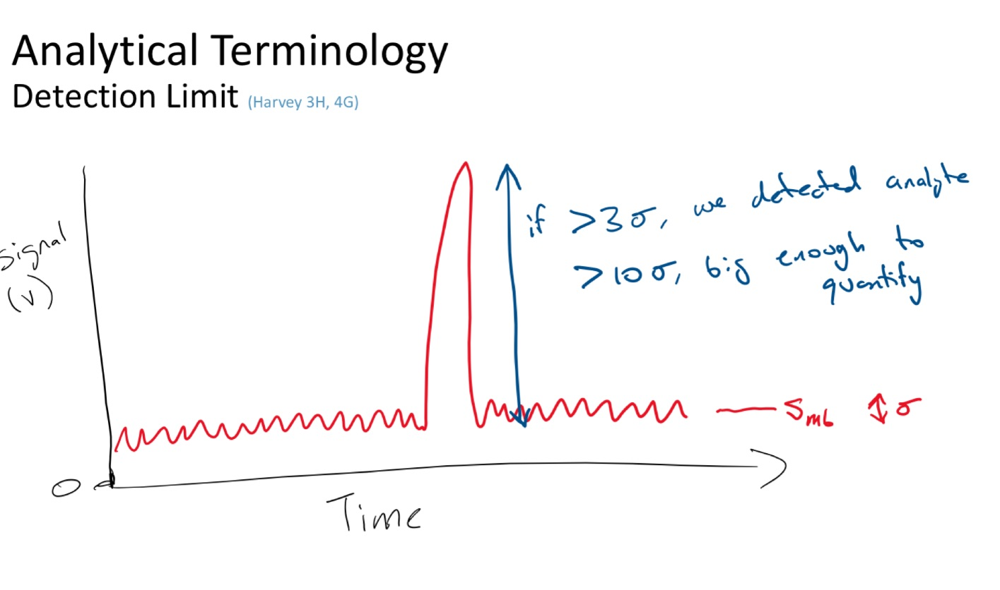
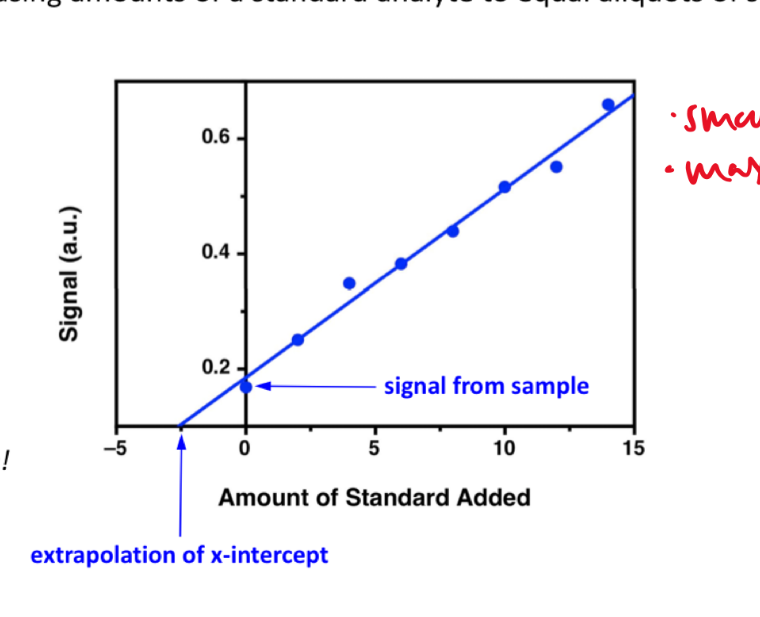

questions
- how does $$N \varpropto \sqrt{n}$$ imply averaged noise, being random, tends to cancel out?
- can we generalize the error propagation for yx?
- what does sd of noise mean?
- why is this S/N = 3 if Smb = 0 important
- what does concentration detection limit mean
units
Course Introduction
- analytical chemistry: obtaining, processing, communicating information about composition/structure of matter
- what matter is present and how much
- trends: personalized technology
- making good measurements and know if those measurements are good
Analytical concepts
An Introduction to Analytical Measurements
lecture 1
- assay: is process of determining the amount of analyte (substance being measured) in sample
- analyte:
- qualitative analysis: (identification) quantitative analysis: (quantity)
- signal
- visual detection: simple, low-cost, subjective, not sensitive, large sample volumes, low-throughput (??)
- electrical detection: objective, more sensitive, faster, automate, costly, maintenance, calibration
- voltage
- current
- transducer: converts input stimulus into electrical output
- measurement:
- signal-to-noise ratio
lecture 2
- assay: set of procedures or methods, latin word for try
- analyte: chemical we are looking for
- qualitative analysis
- quantitative analysis
- measurement:
- signal: can be height or area of line/graph (thing we want) (mean of several measurements)
- noise: unwanted, random fluctuations (sd)
- sample matrix: everything but the analyte.
- matrix: complex and often unknown
- blank: chemist made sample that lacks analyte
- types:
- solvent: same solvent as sample solutions
- method: same solvents and reagents
- sample: tries to approximate the sample matrix, everything but analyte
- types:
- detection limit:
- noise: random fluctuations in measured signal
- blank: a constant (like control) signal measured in absence of analyte
- limit of detection (LOD): smallest concentration of absolute amount of analyte with signal much larger than blank
- signal that is greater than mean of blank + three sds of the noise
- signal LOD: units as signal (instrument maker)
- sample LOD: amount/concentration (user)
- limit of quantitation $$\frac{S}{N} = 10$$: ability to report the concentration
lecture 3

- controls:
- positive: standard sample with known quantity of analyte
- prevents situation when there should be a signal but there is no signal (false negative)
- negative: standard sample with no analyete
- prevents situation when there should be no signal and there is a signal (false positive)
- positive: standard sample with known quantity of analyte
- figures of merit
- LOD, LOQ
- accuracy & precision
- error and replicates:
- absolute: x̄ − μ
- relative: $$\frac{\bar{x} - \mu}{\mu} \times 100 \%$$
- replicate: samples from same source
- error and replicates:
- selectivity
- extent that other substances interfere with determination of analyte
- interference: chemical that causes systematic error in measured quantity
- masking agent: prevents components in sample matrix from interfering with analysis
- extent that other substances interfere with determination of analyte
- sensitivity
- ability of method to measure small changes in concentration of analyte
- range: acceptable linearity, accuracy, precision
- dynamic range: range an instrument can read (measurable response but maybe not linear)
- linear range: analyte concentration over which response is proportional to concentration
- robustness
- ability of method to withstand small, uncontrolled changes in operation parameters
- why FOM: demonstrate validity of method by reporting these parameters
- uncertainty and bias:
- random uncertainty: can’t replicate, contributes to imprecision, quantify with stats
- systematic uncertainty: contribute to inaccuracy, repeatable, can correct for it in principle
- types:
- proportional: %, issue for large signals
- constant: always some absolute value, issue for small signals
- calibration curves:
- external calibration in the lab: series of solutions of known concentration of analyte
- concentration detection limit: lowest concentration of analyte in sample that can be detected
- you can find concentration LOD: $$[C]_{DL} = \frac{3\sigma_{mb}}{m}$$
- matrix effects: combined effect of non-analyte components in sample on measurement of analyte
- calibration standards should approximate analytical samples in analyte and in composition of non-analyte species
- matrix too complex, so use standard addition
- standard addition:
- wet lab: prepare standard solutions but with sample and add analyte to “sample”
- find x-intercept: when y = 0, this is the “original” value of x (without the shift in y axis)
- the linear line has been “shifted” on the y axis 
lecture 4
- internal standard: intentionally add substance that is not expected to be found in sample (not the analyte) but behaves similarly
- constant amount of internal standard, constant IS signal
- changing concentrations of analyte
- plot ratio between analyte and internal standard vs. ratio of their concentrations $$\frac{S_{A}}{S_{IS}}$$ vs. $$\frac{[A]}{[IS]}$$
- calibration curve:
- single point calibration (one standard) and the origin
- multi-point calibration (4-6)
- effect of systematic error in any one standard solution minimized by existence of other standards
| external standards | standard addition | internal standards |
| create standard solutions with varying/known conc. of analyte | add known quantities of analyte to unknown solution | add known amount of different (but similar) compound to unknown and standards |
| interpolate unknown from CC | extrapolate unknown from CC | ration of signal from analyte to signal from internal standard |
| simple, easy | accounts for matrix | accounts for losses throughout analysis |
| can’t account for matrix or inconsistencies in instrument | lots of samples | cost, prep |
- sig figs:
- pH: pH of 2.45, digits after decimal are how many sig figs the conc. has
- exact number has infinite number of sig figs
Analytical Measurements and Statistics - Gaussian Distribution, Standard Deviation
- gaussian distribution: bell curve
- 1sd: 68%
- 2sd: 95%
- 3sd: 99%
- population vs. sample:
- sample sd approaches population sd as N > 20
- as N increases, sd decreases
- propagation of uncertainty:
- addition/sub: $$\sqrt{\sigma^2_a + \sigma^2_b}$$
- mult/div: RSD used
Analytical Measurements and Statistics - Significance Testing
- significance testing: is difference between two values too large to be explained by random uncertainty
| case 1 t-test | case 2 t test | case 3 t-test | grubb’s test |
| compare experi. to true | compare two experi. results | compare two methods | outlier? |
- null hypothesis: no effect
- choose CI before you do experiments
- CI: probability a difference exists when it doesn’t
- student’s t value: permits use of sample data to test hypothesis without knowing population sd
lecture 5
- t-statistic (case 1): validation, where there is a known or true value
- t-statistic (case 2, same sd): comparing 2 means, is there enough statistical overlap
- t-statistic (case 2, different sd): use F-test
- t-statistic (case 3): paired/matched data
- comparing single measurements made with two methods on several different samples
- before and after (drug trials, same people)
- grubb’s test: determine outlier, make sure to remove if it is an outlier
- equilibrium constant
- activity
- weak acid and weak base
- polyprotic acid
- amphiprotic substance
Equilibrium and volumetric analysis
Chemical Equilibrium Applied to Analytical Measurements
lecture 6
Solution Equilibrium and Systematic Treatment of Chemical Equilibrium
Polyprotic Acid Equilibria, Polyprotic Acid-Base Titrations
Complexation Equilibria - Quantitative EDTA Titrations
More Volumetric Analysis
Electrochemistry and Potentiometry
Fundamentals of Electrochemistry
Analytical Measurements using Electrochemical Cells
Electrodes
Ion-selective Electrodes
Potentiometry – Reference and Indicator Electrodes, Ion-Selective
UV-visible spectrophotometry
Ion-selective Electrodes /Introduction to Spectrophotometry
Fundamentals of Spectrophotometry
Applications of Spectrophotometry – Quantitative
Spectrophotometry, Beer-Lambert Law
Applications of Spectrophotometry I
Applications of Spectrophotometry II
Separations and liquid chromatography
Analytical Separations Fundamentals I
Analytical Separations Fundamentals II
Gas Chromatography
Liquid Chromatography I
Liquid Chromatography II
Catch-up/review
lab notes
introduction to statistics
- assumption: data randomly distributed in normal (gaussian) distribution
- estimation of precision: standard deviation
- outlier: Grubb’s test
- comparing two standard deviations: F test
- comparing two means: Student’s t-test
- statistics of repeated measurements:
- absolute uncertainty: uncertainty described directly in the units of measurement
- absolute error: uncertainty from instrument or equipment
- reproducible and source of origin known
- relative uncertainty: percentage of magnitude of quantity measured
- no units, expressed as percentage
- absolute uncertainty: uncertainty described directly in the units of measurement
- mean, sd, confidence limits
- sd: random scatter (s)
- relative sd: $$\frac{s}{\bar{x}} \times 100\%$$
- confidence limits: range that you are confident that true value falls
- number of sds that must be used for different confidence levels is student’s t value $$\bar{x}\pm\frac{ts}{\sqrt{N}}$$
- table t value: requires confidence level (95%) and degrees of freedom (N - 1) where N is number of measurements
- propagation of uncertainty (where y is the answer after doing these operations)
- addition/subtraction: $$e_y = \sqrt{\sum_{n=1}^N e^2_{x_n}}$$
- multiplication/division: $$e_y = y\sqrt{\sum_{n=1}^N (\frac{e_{x_n}}{x_n})^2}$$
- y = log(x): $$e_y = \frac{1}{ln(10)}\frac{e_x}{x}$$
- y = ln(x): $$e_y = \frac{e_x}{x}$$
- powers of 10 raised to x: ey = yln(10)ex
- powers of e raised to x: ey = yex
- sig figs and presenting results:
- uncertainty of measurement is larger than instrument’s uncertainty
- sd determines uncertainty of measurement
- if uncertainty is larger than instrument’s uncertainty, the first non zero digit of sd is last sig dig in mean
- report as 0.xyzl ± 0.00sd
- sd is reported as one digit, the decimal places of mean and sd must match, record the value after the last sig dig as subscript
- uncertainty is smaller than instrument’s uncertainty
- can’t use first rule, otherwise reported uncertainty (sd) is lower than instrument uncertainty which cannot be true
- report answer to same number of digits as instrument’s readout
- uncertainty of measurement is larger than instrument’s uncertainty
- statistics of linear regression analysis
- calibration curve analysis (pure compound dissolved in pure water):
- prepare series of standard solutions containing known concentration of analyte -> measure property of substance -> plot calibration curve
- goodness of fit: correlation coefficient R2
- once CC established, unknown solutions can be measured and concentration calculated from: $$C = \frac{(A-b)}{m}$$ where C is concentration, A is measured property, b is y-intercept, m is slope
- measure of precision is sd: sd of result must be calculated taking into account precision of the calibration curve sx
- depends on sd of slope, regression
- number of values measured for CC
- number of times the sample was measured
- square of distance of unknown measurement from center of calibration curve $$(\bar{y_k}-\bar{y})^2$$
- closer the measurement is made to the ends of calibration curve, the larger the deviation
- confidence limits for values CL = x ± tṡx
- t value taken at desired confidence level and (N−2) degrees of freedom (because need two points to specify a line)
- beer’s law
- spectrophotometric analysis: theory -> light of wavelength λ and power Po/intensity Io enters a sample that absorbs that wavelength, sample molecules raised to excited state and exiting P of light will be less. $$T = \frac{I}{I_o} = \frac{P}{P_o)}$$
- measure of Io with no sample present, then measure I with sample present: A = mC + b
- transmittance vs. concentration is a exponentially decreasing, so A = − logT
- absorbance is directly proportional to concentration of light-absorbing substance: A = abC = ϵbC, b is path length, A is absorbance, C is concentration, a is proportionality constant called absorptivity
- linear calibration plot
- absorbance is directly proportional to concentration of light-absorbing substance: A = abC = ϵbC, b is path length, A is absorbance, C is concentration, a is proportionality constant called absorptivity
- plot absorbance vs. concentration to get ab or ϵb (will be linear)
- prepare series of standard solutions containing known concentration of analyte -> measure property of substance -> plot calibration curve
- standard addition analysis
- complex samples
- matrix effect can be minimized in two ways:
- add standard solution so same substances as unknown sample (same matrix in all solutions)
- prepare standard solutions from sample rather than pure analyte and pure solvent
- measure property of unknown solution
- add known amount of analyte to sample and measure again
- if volsample > > volanalyte, will have around same matrix
- or pipetting equal volumes of unknown solution into vol. flask and adding known amount of analyte to one, diluting both
- spiking, and matrix stays the same for both (standard addition method)
- absorbance vs. concentration of spike:
- matrix effect can be minimized in two ways:
- complex samples
- calibration curve analysis (pure compound dissolved in pure water):
glassware
pipette
- TD: pipette is accurately calibrated to deliver specified volume of liquid
- delivers a specific volume, but holds more
- TC: pipette contains specified volume of liquid with no remainders
- contain a specific volume